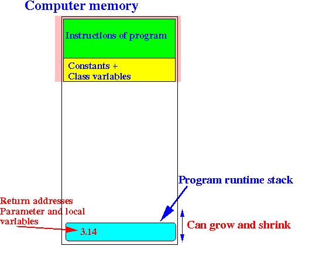

- When a program
starts its
execution, the
memory usage will be
as follows:

- When we invoke a
method,
e.g.:
x = Math.sin( 3.14 );The method invocation will allocate (= reserve memory) the parameter variables and the local variables of the method on the program stack:
 In fact:
- All modern high level programming languages will allocate (reserve) memory on the program stack for parameter passing and local variables
- The program stack is
implemented using the
special purpose register SP

- For a detailed review, see these webpages:
- The program stack of a running program: click here
- The ARM assembler push and pop instructions: click here
- The stack pointer is used
indicates
the part of
memory that
is currently in use:
Notice that:
- Memory cells that are below the stack pointer SP are currently in use
- Memory cells that are above the stack pointer SP are currently not in use
- When a function
use the
program stack to
store its
parameters and local variables,
it must
reserve space in the
unused area to
store the
parameters and local variables:
This is what we will be doing...
However.... things is a little bit more complicated that just storing parameters and local variables....
Because we must also store other things !!!!
(That's why the key to understanding how to store parameters and local variables using the program stack is: organization)
- Recall that
a non-leaf function
must save its
return address on the
program stack.
- The structure of a
non-leaf function was
as follows:
f: push {lr} // Save return address on STACK !!! .... pop {pc} // Use return address on stack to return.So when a non-leaf function begins execution, it must first push its return address on the program stack !!!
- That means, the program stack will
contain (at least) the following:
- Parameters
- Local variables
- Return address
The stack will contain a complex object with different parts
We call this object: a stack frame or a "procedure activation record"
(More detail on this object later)
- Furthermore:
- We need a way to access the parameters and local variables that are stored on the program stack !!!
We will use a register to point to the stack frame to allow us to access the parameters and local variables.
This register is typically called the frame pointer register (or FP) because it points to a stack frame object.
- In what follows, I will
illustrate the
steps where
a caller program will
call a
subroutine with
parameters and
local variables:
- The caller program will
pass its
parameters on the
program stack and then
use bl to
call the
subroutine
- The (called) subroutine will
create (= allocate)
local variables on
the program stack
- In addition
(because it's a non-leaf function),
the subroutine will
first save its
return address
on the program stack
- Furthermore,
to access
parameters and
the local variables in the stack,
the
subroutine will
point to the
stack frame
with
the FP (Frame Pointer) register
The FP (Frame Pointer) register is shared (just like the LR register that stores the return address and must also be saved on the stack !!!
- The caller program will
pass its
parameters on the
program stack and then
use bl to
call the
subroutine
- The
steps (= events)
will always happen
in the same
specific sequence !!!
And these events (with a fixed ordering) will therefore construct a structure on the program stack that always has the same specific structure
Therefore:
- Pay attention to the ordering of the events and the resulting data structure that will be constructed by this sequence of events (to help you understand and remember the structure)
- What will happens with
the program stack when
methods use it to
pass parameters and
reserve space for
local variables
pass a
parameter:
- We know that
main will need to
use the "bl sumRange"
instruction to call
the method/subroutine sumRange:
After executing the "bl sumRange" instruction, the program execution will continue in the sumRange method.
Therefore, we must pass the parameters before the "bl sumRange" instruction
In other word: we must push the parameters on the stack before we call the method:

- After passing
the parameters on the
program stack,
the caller method (= main)
executes
the bl sumRange
instruction to call
the sumRange( ) method
The bl sumRange instruction will save the return address in the LR register
The called method will now start its execution
Recall that the first thing that a non-leaf subroutine must do is:
- Save (= psuh) its return address on the program stack
(I know sumRange is not a non-leaf subroutine, but the discussion on using the stack to store parameters and local variables was caused by a non-leaf subroutine and I am using sumRange only as illustration - just pretend that it is a non-leaf subroutine in this discussion)
So the stack will have the following information after the called subroutine has saved its return address:
- The called method will
first establish
a
base pointer
into the
program stack
so
it can
access its own
parameters (and its own local variables)
The special purpose FP (Frame Pointer) is reserved for this purpose.
In other words, the called function wants to initialize the FP register with the following address:
However:
- The FP register
is a shared resource
(and is used by
other function to
access
their own
parameters and local variables
This is the same situation as the return address stored in the LR register !!!
Therefore: we must save the FP register first, before we use it for ourselves.
So we must push the FP (Frame Pointer) register on the stack (just like the return address in LR):
And now we can make FP point to the stack top:
FP will be the base address that the function will use to access its parameters and local variables stored in the stack !!!
- The FP register
is a shared resource
(and is used by
other function to
access
their own
parameters and local variables
- Finally,
the function will
allocate more memory in the
stack for
its local variables:
So the structure of the data stored in the stack when we use it to pass parameters and store local variables is always as follows:
To access the parameters of the subroutine/method, we use positive offsets from the FP (Frame Pointer) register
To access the local variables of the subroutine/method, we use negative offsets from the FP (Frame Pointer) register
- We know that
main will need to
use the "bl sumRange"
instruction to call
the method/subroutine sumRange:
- Summary: (building the stack frame)
- When the stack is
used to pass parameters and store local variables,
the method/function will
always
construct
(= organize) the
(1) parameters, (2) local variable, (3) FP and
(4) return address in the following
data structure
as follows:

This data structure is called a (subroutine) activation record or stack frame
Wikipedia page: click here
- These are the
prescribed action
(= recipe) that
a method (program) must do
in order for a method/function
to use the stack
to
pass parameters and store local variables:
- The calling method will
push the
parameters on the
stack
and the
call the
method
Example:
load parameter 3 into r0 push {r0} load parameter 2 into r0 push {r0} load parameter 1 into r0 push {r0} bl Method/FunctionThis will result in the following stack:
- When the called function
returns, the
pushed parameters will
still be on the stack !!!
The calling function must de-allocate the pushed parameters from the stack
Example:
add sp, sp, #12 // De-allocate 12 bytes from the stack
- When the called method/function
starts running, the
stack will only
contain the
parameters:
The called method/function must first use this specific sequence of assembler instruction to build/complete the stack frame (activation record) structure :
push {lr} // Save the shared LR reg (contains return addr) push {fp} // Save the shared FP reg (contains the base addr of stack frame) mov fp, sp // Establish the base address in the FP register sub sp, sp, #N // Allocate N bytes for local variablesThis sequence of instruction is called the prelude of a method and will build this data structure (it's called an activation record or stack frame):
- After the prelude, you can
write the instructions of the
method (in assembler code)
The instructions can access the parameters and local variable using some offset from the base address in the FP register:
The offset of the 1st parameter is 8 (from the base address in FP)
The offset of the 2st parameter is 12 (from the base address in FP)
Etc.The offset of the 1st local variable is -8 (from the base address in FP)
The offset of the 2st local variable is -4 (from the base address in FP)
Etc.
- The calling method will
push the
parameters on the
stack
and the
call the
method
- When the stack is
used to pass parameters and store local variables,
the method/function will
always
construct
(= organize) the
(1) parameters, (2) local variable, (3) FP and
(4) return address in the following
data structure
as follows: